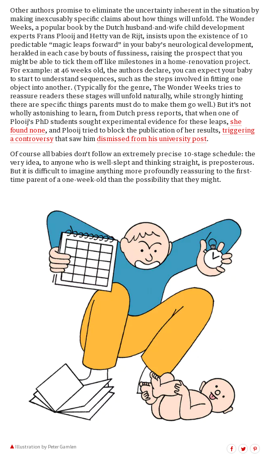

The Gender Gap on Wikipedia
Talk by Marielle Volz
[[User:Mvolz]]@mariellevolz
marielle.volz@gmail.com
Disclaimer: I work for or provide services to the Wikimedia Foundation, but I am not representing the Foundation in this talk. Statements made in this talk are my own, and may not reflect the views of the Foundation.
"Imagine a world in which every single human being can freely share in the sum of all knowledge. That’s our commitment."- Wikimedia Foundation
The Importance of Wikipedia
| Site | Domain | Alexa top 50 global sites (As of January 31, 2018) |
SimilarWeb top 50 sites (As of December 2017) |
Type |
|---|---|---|---|---|
| google.com | 1 | 1 | Internet services and products | |
| YouTube | youtube.com | 2 | 3 | Video sharing |
| facebook.com | 3 | 2 | Social network | |
| Baidu | baidu.com | 4 | 4 | Search engine |
| Wikipedia | wikipedia.org | 5 | 5 | Encyclopedia |
Source: Wikimedia Report Card
{kind=link}
Are our editors representative of our readers?
Significant Editor Gender Gap
< 1/4 of registered Wikipedia editors are female; active editors may be even lower.Slide source: Netha Hussain CC-BY-SA-4.0
The Content Gender Gap
Is the editor gender gap reflected in the content on Wikipedia?Biography Gender Gap
The Women in Red project has closed the gap from 14% to 17.49% in English Wikipedia.
Coverage bias
Slide source: Netha Hussain CC-BY-SA-4.0Structural bias
Slide source: Netha Hussain CC-BY-SA-4.0Lexical bias
Slide source: Netha Hussain CC-BY-SA-4.0Visibility bias
Slide source: Netha Hussain CC-BY-SA-4.0The Invisible Content Gap
Data source: Schrijver, Paul (2016-05-25). “Gender gap on Wikipedia: visible in all categories?”. University of Amsterdam. (bachelor thesis)
Slide source: Netha Hussain CC-BY-SA-4.0
Intersectional Gaps
Who else are we missing?What percentage of Wikipedians are mums?
Blog post: Why women have no time for WikipediaMy response:What Percentage of Wikipedia Editors are Mums?
Why edit?
 Source: 16 Jan 2018.The diabolical genius of the baby advice industry. The Guardian.
Screenshot used under fair use doctrine.